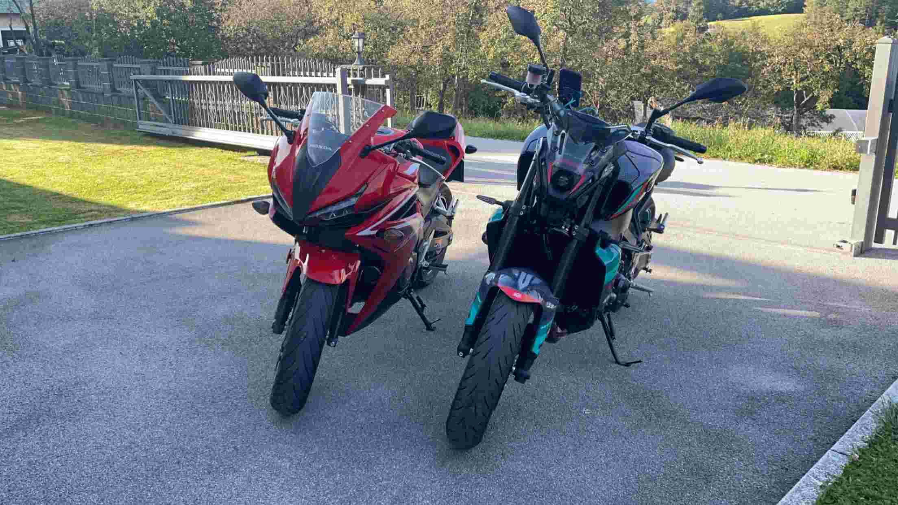
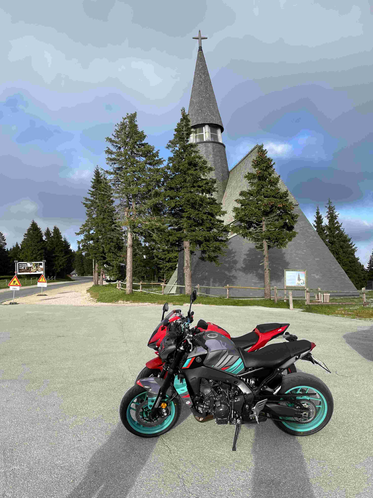
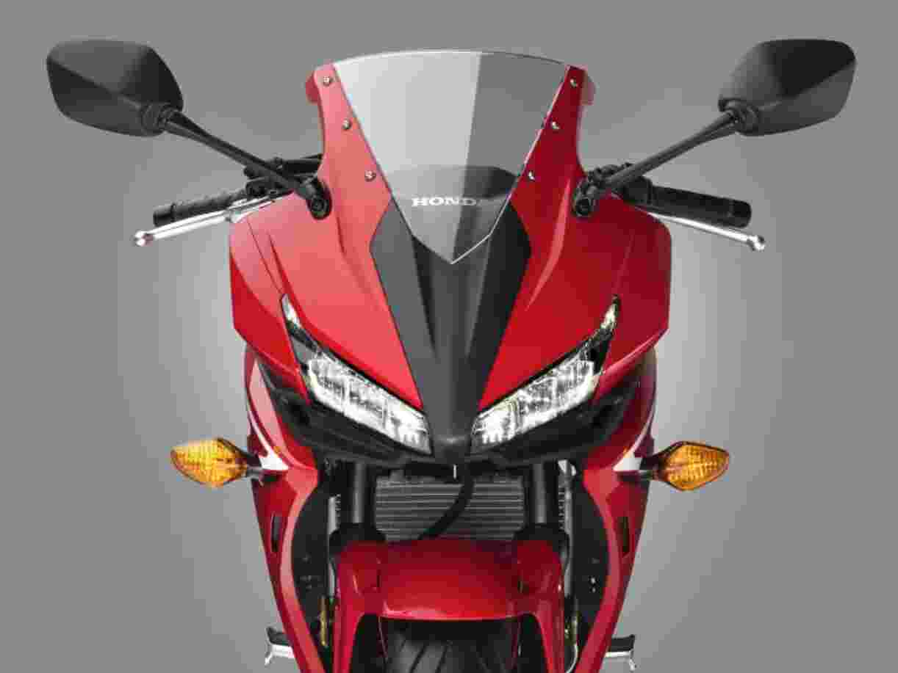

Uvod
Honda CBR500R, v svetu športnih motociklov prepoznavna po svoji izjemni zmogljivosti, predstavlja popolno sinergijo med močjo in udobjem. S svojim privlačnim dizajnom in natančno izdelanimi detajli, ta motocikel prevzame s svojo čistokrvno športno naravnanostjo. Zgodba o CBR500R seže dlje od zgolj tehničnih lastnosti; gre za izrazito vozilo, ki združuje vrhunsko tehnologijo z izjemno voznikovo izkušnjo.

Oblikovanje in estetika
CBR500R ne predstavlja zgolj motocikla, temveč pravo umetniško delo na dveh kolesih. Vsaka linija je premišljeno oblikovana, da izrazi športno srce tega motocikla. Aerodinamični oklep skupaj z agresivnimi linijami ponuja izjemen estetski izgled, ki ne le očara, ampak tudi izboljšuje vožnjo in stabilnost med premikanjem skozi zrak.

Zmogljivosti in tehnične lastnosti
Srce CBR500R bije v obliki 471-kubičnega motorja, ki ponuja izjemno moč in navor. Zmogljivost motorja je izpopolnjena z natančnim uravnoteženjem, kar omogoča izjemno odzivnost na vsak voznikov ukaz. Sistem zaviranja in podvozje sta zasnovana za optimalen oprijem in agilnost v ovinkih, kar vozniku omogoča izpopolnjeno nadzorovano vožnjo.

Vsestranskost in Uporabnost
Poleg svoje športne naravnanosti se CBR500R odlikuje tudi po udobju, ki ga ponuja vozniku. Ergonomsko oblikovano sedlo in optimalna višina sedeža nudita udobno vožnjo tudi na daljših poteh. Poleg tega je motocikel opremljen z naprednimi funkcijami, ki povečajo njegovo vsestranskost, kar ga naredi primernega tako za začetnike kot tudi za izkušene voznike.
